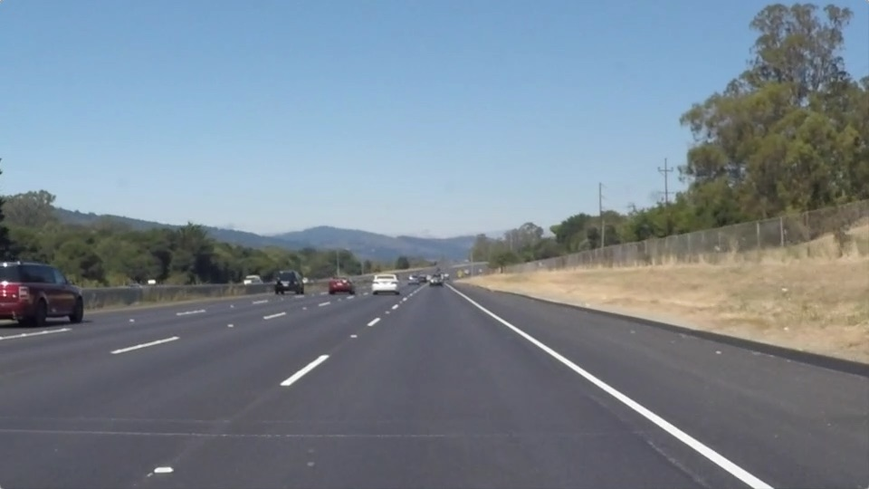
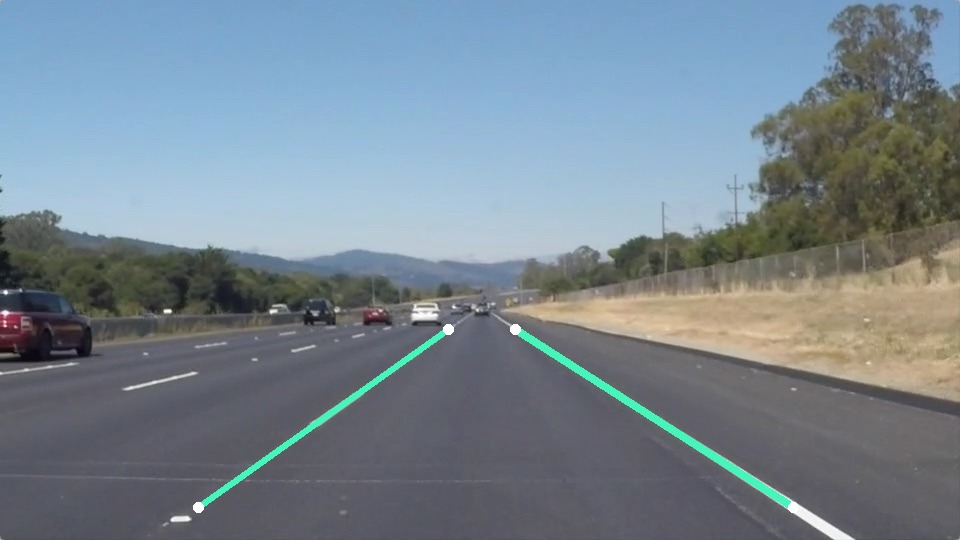

Computer vision · Coursework
Finding the road ahead
Finding lane markings in a road image.
An early self-driving-car course project exploring a deceptively simple question: how can a computer identify lane markings in a road image?
Look for the boundaries
New portfolio demonstration · one course image

Course image: Udacity lane-finding materials in the original coursework repository. Overlay: a new colour-selection and line-fit example, prepared for this portfolio in October 2026.
The aim
Find the left and right lane boundaries using classical image processing, and understand where those assumptions stop working.
The work
The archived Udacity coursework introduced region selection, colour and edge processing, and line detection. The comparison is a small, newly implemented portfolio example: colour selection inside a road region, followed by a line fit on each side.
What exists
The new example produces two boundary overlays for one supplied course image. The short reproducible implementation is linked on this page. This educational single-image example has not been validated for curves, video, poor weather or unfamiliar roads.